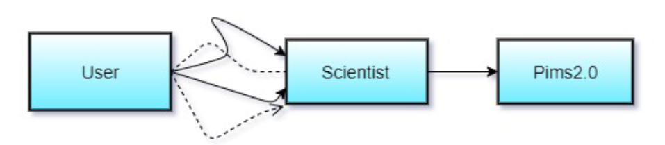
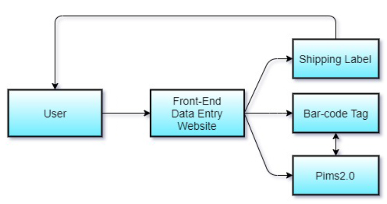

01
Data Entry
Manual data entry done by scientists
02
Non-standardized data collection
Collaborators are using their own methods of submitting data
via different spreadsheets
03
Non-dynamic data submission
Data associated with samples is dynamic, often changing on a case by case basis,
the current process does not account for this
Current Workflow:

Our Solution:

We envision solving solving the problem by creating a Website for
TGEN & their contributors, that also communicates with their current database.
In this app, users could log in securely, then be able to enter in all the
required data about their samples.